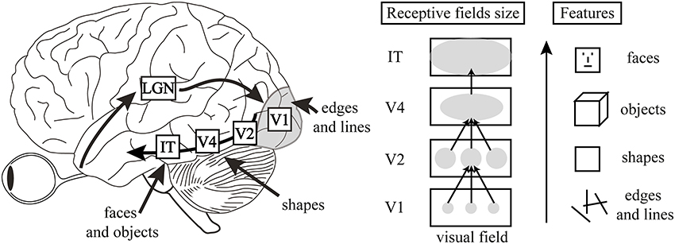

R-CNN: The Paper that Revolutionized Object Detection

In the world of computer vision, progress on object detection had hit a wall by the early 2010s. Existing methods were complex, incremental, and struggling to push performance forward. Then, in 2012, AlexNet and deep learning changed everything for image classification. This left a critical question hanging in the air: could the power of Convolutional Neural Networks (CNNs) be harnessed for the more complex task of localizing and classifying multiple objects within an image?
Enter R-CNN. In their 2014 paper, “Rich feature hierarchies for accurate object detection and semantic segmentation,” Ross Girshick and his team at UC Berkeley didn’t just answer “yes”—they smashed the existing benchmarks, setting a new course for the entire field.
{kind=link}
Let’s break down exactly how they did it, section by section.
Abstract
{kind=link}
This abstract is the perfect elevator pitch. It crisply defines the problem, presents a groundbreaking solution, and quantifies its success with a staggering number. Let’s unpack the key points.
The Problem: A Performance Plateau
The authors open by stating that progress on the PASCAL VOC dataset—the benchmark for object detection at the time—had stalled. The top models were “complex ensemble systems” that mixed handcrafted features (like HOG and SIFT) with other contextual models. This is academic language for “we’re stuck building increasingly complicated systems just to squeeze out another fraction of a percentage point in accuracy.” The field was hungry for a breakthrough.
The Solution: Two Key Insights
The authors propose R-CNN, a method built on two simple but powerful ideas that, when combined, shattered the performance plateau.
Regions + CNNs: The first insight is architectural. Instead of applying a computationally expensive CNN across an entire image in a sliding-window fashion, they propose a two-step process. First, use an efficient, traditional computer vision algorithm to generate a set of potential object locations, called “region proposals.” Then, and only then, run a powerful CNN feature extractor on these proposed regions.
- Analogy: Imagine searching for a specific book in a massive library. The old “sliding window” approach is like reading the title of every single book on every shelf—thorough but incredibly slow. The R-CNN approach is like asking the librarian (the region proposal algorithm) to first point you to all the shelves that contain books about “computer science.” You then only need to apply your expert knowledge (the CNN) to these much smaller, more relevant sections. This is the core idea of “recognition using regions.”
Pre-training and Fine-Tuning: The second insight is about the training strategy. Object detection datasets, which require expensive bounding-box annotations, are much smaller than classification datasets. This makes training a “high-capacity” (i.e., very large) CNN from scratch on a detection dataset nearly impossible due to overfitting. The authors’ solution is a now-standard technique called transfer learning:
- Supervised Pre-training: First, train a large CNN on an “auxiliary task” with abundant data—in this case, image classification using the massive ImageNet (ILSVRC) dataset. This teaches the network a rich hierarchy of visual features, from simple edges and colors to more complex textures and object parts.
- Domain-specific Fine-tuning: Then, take this pre-trained network and continue training it (fine-tune it) on the smaller, domain-specific dataset (PASCAL VOC for object detection). This adapts the generic features learned from ImageNet to the specific task of detection.
The Result: A Quantum Leap in Accuracy
The result of these two insights is a massive performance gain. R-CNN achieved a mean Average Precision (mAP) of 53.3% on PASCAL VOC 2012. This represented a 30% relative improvement over the previous state-of-the-art. In a field accustomed to incremental gains, this was a revolutionary jump that unequivocally demonstrated the power of deep learning features for object detection.
Finally, the authors astutely compare R-CNN to a contemporary model, OverFeat, which also used CNNs but in a sliding-window fashion. By showing that R-CNN significantly outperforms OverFeat, they prove that their approach—combining region proposals with CNNs—is superior, not just the use of CNNs in general.
1. Introduction
{kind=link}
{kind=link}
Features Matter: From Handcrafted to Learned Hierarchies
The paper opens with a simple, powerful declaration: “Features matter.” In machine learning, a “feature” is a numerical representation of raw input data. For computer vision, this means converting a grid of pixels into a compact, informative vector that a model can learn from. The quality of these features dictates the performance of the entire system.
For about a decade, the field was dominated by two titans of feature engineering:
- SIFT (Scale-Invariant Feature Transform): An algorithm that identifies keypoints in an image and describes the local region around them based on gradient orientations. It’s robust to changes in scale and rotation.
- HOG (Histogram of Oriented Gradients): An algorithm that divides an image into small cells, calculates a histogram of gradient directions within each cell, and then normalizes these histograms across larger blocks. This proved incredibly effective for detecting objects with well-defined shapes, like pedestrians.
These handcrafted features were the engine of computer vision progress in the 2000s. But, as the authors point out, by 2010, progress on the benchmark PASCAL VOC object detection challenge had stagnated. Researchers were hitting a wall, creating complex “ensemble” systems that layered models on top of models just to eke out marginal improvements. The well of handcrafted features was running dry.
The authors then make a brilliant analogy to neuroscience. They equate SIFT and HOG to the computations performed by complex cells in V1, the first processing area in the brain’s visual cortex. V1 is great at detecting basic elements like edges and orientations. But human vision doesn’t stop there; recognition is a hierarchical process. Information from V1 flows to V2, V4, and other areas that recognize more complex structures like shapes, textures, and eventually, whole objects.

Image source: Why vision is not both hierarchical and feedforward
This analogy beautifully frames the problem. If the entire field was stuck using “V1-like” features, the logical next step was to build models capable of learning a richer, multi-stage feature hierarchy. This is the perfect setup to introduce Convolutional Neural Networks, which do precisely that.
The Rise of Convolutional Neural Networks (CNNs)
{kind=link}
Having established the need for a hierarchical feature extractor, the authors now introduce the model that would eventually provide the solution: the Convolutional Neural Network. But they start with its ancestor, the Neocognitron, developed by Kunihiko Fukushima in 1980.
{kind=link}
{kind=link}
The Neocognitron was a visionary model. It directly mimicked the hierarchical structure of the visual cortex with layers of “S-cells” (simple cells) for feature extraction and “C-cells” (complex cells) for pooling, making it robust to shifts in the position of objects. It had the right architectural idea, but it was missing a critical component: an effective way to learn. As the paper notes, it “lacked a supervised training algorithm.” There was no efficient way to teach the model by showing it labeled examples and correcting its mistakes.
The solution to this problem came from a different line of research. The breakthrough was backpropagation, an algorithm popularized by Rumelhart, Hinton, and Williams that allowed for efficient “end-to-end” training of multi-layered networks.
- Backpropagation: In simple terms, this algorithm calculates the error (the difference between the network’s prediction and the correct label) and then propagates this error signal backward through the network. As the signal travels back, it tells each connection how much it contributed to the total error, allowing the network to adjust its internal parameters (weights) to make a better prediction next time.
It was Yann LeCun who, in the late 1980s and early 1990s, fused the architecture of the Neocognitron with the training power of backpropagation. This combination created the modern Convolutional Neural Network (CNN): a hierarchical, biologically-inspired model that could actually be trained effectively on real-world data.
The Boom, Bust, and Rebirth of CNNs
{kind=link}
Here, the authors chart the rollercoaster history of CNNs.
- The Boom (1990s): Thanks to Yann LeCun’s work, CNNs were successful in the 90s for specific, constrained tasks like recognizing handwritten zip codes (the famous LeNet-5 architecture).
- The Bust (~2000-2012): CNNs then entered a so-called “AI winter.” Why? Training them was computationally brutal, and they required huge amounts of labeled data that simply didn’t exist yet. A more mathematically elegant and practical approach, the Support Vector Machine (SVM), took over. When paired with powerful handcrafted features like SIFT and HOG, SVMs became the state-of-the-art for most computer vision tasks.
- The Rebirth (2012): Everything changed in 2012. At the annual ImageNet Large Scale Visual Recognition Challenge (ILSVRC), a team from the University of Toronto led by Alex Krizhevsky (and including Geoffrey Hinton) unveiled a deep CNN, now famously known as AlexNet. It didn’t just win the competition; it demolished the competition. Its error rate was 15.3%, while the next best entry, which used traditional methods, was stuck at 26.2%. This was the moment the entire field was forced to pivot to deep learning.
The authors highlight that AlexNet’s success wasn’t just about using an old idea. It was a perfect storm of three key ingredients:
- Big Data: The existence of the ImageNet dataset, with its 1.2 million labeled images, was crucial. For the first time, there was enough data to train a deep, high-capacity network without crippling overfitting.
- Big Compute: The use of Graphics Processing Units (GPUs) made it feasible to train such a large network in a reasonable amount of time (days instead of months).
- Algorithmic Tweaks: AlexNet introduced two simple but vital improvements:
- ReLU (Rectified Linear Unit): A new activation function (
max(0, x)) that replaced the traditional sigmoid and tanh functions. Its simplicity and non-saturating nature allowed gradients to flow more easily during backpropagation, dramatically speeding up training. - Dropout: A regularization technique where a random fraction of neurons are ignored during each training step. This prevents the network from becoming too reliant on any single neuron and forces it to learn more robust and general features, significantly reducing overfitting.
- ReLU (Rectified Linear Unit): A new activation function (
Bridging the Gap: From Classification to Detection
The significance of the ImageNet result was vigorously debated during the ILSVRC 2012 workshop. The central issue can be distilled to the following: To what extent do the CNN classification results on ImageNet generalize to object detection results on the PASCAL VOC Challenge?
We answer this question by bridging the gap between image classification and object detection. This paper is the first to show that a CNN can lead to dramatically higher object detection performance on PASCAL VOC as compared to systems based on simpler HOG-like features. To achieve this result, we focused on two problems: localizing objects with a deep network and training a high-capacity model with only a small quantity of annotated detection data.
AlexNet’s victory was a seismic event, but it didn’t immediately solve all of computer vision’s problems. As the authors note, the community was buzzing with a critical question. Knowing a CNN could tell you that an image contains a cat (classification) is one thing. But can it tell you where the cat is by drawing a tight box around it (detection)? This is a fundamentally harder problem. Classification has one answer per image; detection can have many answers, each with precise spatial coordinates.
The authors position their paper as the definitive answer to this debate. They explicitly state their goal is to bridge this gap. They then make a bold claim: this is the first paper to prove that a CNN can blow past the old HOG-based systems for object detection on the PASCAL VOC benchmark.
To get there, they had to solve two specific, challenging problems that we saw foreshadowed in the abstract:
- The Localization Problem: How do you adapt a network built for whole-image analysis to pinpoint the location of potentially many, arbitrarily-sized objects? A naive sliding-window approach would be computationally prohibitive for a deep network like AlexNet.
- The Data Scarcity Problem: How do you train a massive, data-hungry CNN for detection when the best available datasets (like PASCAL VOC) are orders of magnitude smaller than ImageNet?
The Localization Challenge: Rejecting the Obvious
{kind=link}
Here, the authors systematically dismantle the two most intuitive ways to adapt a CNN for object detection, demonstrating why a new approach is necessary.
Approach 1: Bounding Box Regression (Rejected)
The first idea is to treat localization as a regression problem. This means training the CNN to directly predict the coordinates of a bounding box—its x and y position, width, and height—as numerical values. The authors quickly dismiss this, not based on theory, but on empirical evidence. They point to a concurrent paper that tried this and achieved a mAP of 30.5%. By contrasting this with their own result of 58.5%, they make a powerful statement: direct regression wasn’t the way to go.
Approach 2: The Sliding Window Detector (Rejected for Deep CNNs)
The second, more traditional approach is the sliding window detector.
- How it works: You take a small window (or patch) of a fixed size, slide it across the entire image, and run a classifier on each patch to see if it contains an object. To find objects of different sizes, you repeat this process with windows of different scales. This is a classic and robust technique.
The authors acknowledge that this has been done with CNNs before, but with a critical caveat: it only worked well with shallow networks (e.g., just two layers). Why? Because shallow networks have high spatial resolution.
This brings us to the core reason why the sliding window approach fails for a deep network like the one used in this paper (a variant of AlexNet). The problem lies in two key properties of deep CNNs:
- Receptive Field: This is the size of the region in the input image that a single neuron in a given layer is “looking at.” As you go deeper into the network, each neuron’s receptive field grows exponentially. The authors state that neurons in their final convolutional layer have a massive receptive field of 195x195 pixels. A single feature is summarizing a huge chunk of the image, making it very difficult to precisely locate a small object within that field.
- Stride: This is the step size the network’s filter takes as it moves across the image. The deep network they use has a large stride of 32x32 pixels. This means the “window” jumps 32 pixels at a time. This is great for classification, as it’s computationally efficient, but terrible for detection. An object could easily fall between the strides, leading to poor localization.
Trying to use a deep CNN as a sliding window detector is like trying to perform delicate surgery with a shovel. The tool is too coarse for the fine-grained task of precise localization.
The R-CNN Pipeline: A Simple, Powerful Idea
{kind=link}
Instead of forcing a single, monolithic model to solve the entire detection problem, the authors propose a multi-stage pipeline. This “recognition using regions” approach cleverly combines the best of traditional computer vision with the raw power of deep learning. It’s a three-step process (plus a pre-processing step) that forms the core of the R-CNN algorithm.
Step 1: Propose Regions
First, the system needs to identify potential object locations. Instead of blindly scanning the image with a sliding window, R-CNN uses a region proposal algorithm.
- What it is: These are algorithms from the pre-deep-learning era of computer vision designed to find “blobs” or regions in an image that are likely to contain an object, regardless of what that object is. The specific method used in the paper is Selective Search, but the R-CNN framework is agnostic to the choice.
- Why it’s smart: This step is fast and efficient. It acts as a quick filter, narrowing down a near-infinite number of possible bounding boxes to a manageable list of about 2000 “interesting” candidates. It’s category-independent, meaning it doesn’t need to know what a “car” or a “person” is; it just looks for general object-like shapes, colors, and textures.
Step 2: Warp and Prepare
Now we have ~2000 candidate regions of all different shapes and sizes. However, the CNN (AlexNet) requires a fixed-size input (227x227 pixels). To solve this, the authors use a simple, pragmatic approach: they warp every region proposal.
- Affine Image Warping: This is a technical term for simply taking the pixels inside each rectangular region proposal and stretching or squishing them to fit the required 227x227 square, regardless of the original aspect ratio. A long, thin rectangle and a tall, skinny rectangle both get distorted to fill the same square shape.
Step 3: Extract Features with a CNN
This is where the magic happens. Each of the ~2000 warped image regions is passed through the pre-trained CNN. However, the goal isn’t to use the network’s final classification output. Instead, R-CNN acts as a universal feature extractor.
- The Process: The network processes the warped region, and the authors intercept the output from one of the last layers (specifically, the last fully connected layer before the classifier). This output is a 4096-dimensional feature vector—a rich, numerical “fingerprint” that describes the content of the region. This vector is far more powerful and semantically meaningful than handcrafted features like HOG.
Step 4: Classify Regions
At this point, the image has been transformed into a set of ~2000 feature vectors. The final step is to decide what object, if any, each vector represents. For this, the authors train a separate binary linear Support Vector Machine (SVM) for each object class.
- How it works: There is one SVM for “person,” another for “car,” a third for “dog,” and so on. Each SVM is an expert at one thing: taking a 4096-d feature vector and outputting a score indicating its confidence that the region contains its specific class.
This hybrid approach combines a state-of-the-art deep feature extractor (the CNN) with a powerful and well-understood classifier (the SVM). Finally, the name itself becomes clear: it’s a system that combines Regions with CNN features.
Figure 1: The R-CNN Pipeline in a Nutshell
{kind=link}
This single figure perfectly illustrates the four-step process at the heart of R-CNN and recaps its groundbreaking performance. Let’s walk through it.
Step 1: Input Image
It all starts with a single image. The example shows a person on a horse, a classic detection scenario.
Step 2: Extract Region Proposals
This is the “where” module. The figure shows multiple yellow bounding boxes overlaid on the image, representing the ~2000 candidate object locations generated by the Selective Search algorithm. Notice that the proposals are of varying sizes and aspect ratios, and they cover many different parts of the image—some tightly enclosing the person, some capturing the horse, and many just covering the background. This step acts as a massive filter, narrowing down the search space for the computationally expensive steps to follow.
Step 3: Compute CNN Features
This is the “what” module and the core of the R-CNN’s power. The figure visualizes what happens to one of the region proposals (the one around the person).
- Warped Region: The rectangular proposal is extracted and then anisotropically warped (squished) into a square shape to fit the CNN’s required input size.
- CNN Forward Pass: This warped region is then fed into the “large convolutional neural network.” The diagram shows the data flowing through the layers of the network. This process transforms the raw pixels of the warped region into a high-dimensional feature vector—the rich, semantic fingerprint that describes the region’s content.
Step 4: Classify Regions
This is the “which” module. The feature vector computed in the previous step is now passed to the bank of linear SVMs. The diagram shows the outputs for three potential classes:
aeroplane? no.person? yes.tvmonitor? no.
Each SVM acts as a binary expert, giving a simple yes/no decision (in reality, a confidence score). This is done for every one of the ~2000 proposals, producing a final list of classified regions and their scores.
The figure’s caption then serves as a compact summary of the paper’s entire argument, reinforcing the key performance numbers on both the PASCAL VOC and ILSVRC datasets and highlighting the massive leap over previous state-of-the-art methods like DPM and OverFeat.
Proving the Paradigm: R-CNN vs. OverFeat
{kind=link}
To prove that their “recognition using regions” paradigm was the right choice, the authors needed to compare it against a strong alternative. That alternative was OverFeat, another influential paper from the same era that also applied deep CNNs to detection.
The crucial difference is that OverFeat used a highly optimized version of the sliding-window approach that the R-CNN authors had just argued against. This set up a perfect natural experiment: two systems using similar powerful CNNs but with fundamentally different localization strategies.
The results on the large-scale ILSVRC2013 detection dataset were decisive. R-CNN achieved a mean Average Precision (mAP) of 31.4%, handily beating OverFeat’s 24.3%. This was powerful evidence that for deep networks, the R-CNN pipeline of “propose, warp, extract” was a more effective strategy than a brute-force (though clever) sliding window.
The Training Recipe: Pre-training and Fine-tuning
{kind=link}
Here, the authors detail their solution to the data scarcity problem, which stands as their second major contribution. Training a network with millions of parameters (like AlexNet) on a dataset with only a few thousand labeled examples (like PASCAL VOC) is a recipe for massive overfitting.
Their solution is a two-step process now known as transfer learning:
Supervised Pre-training: First, they take the CNN architecture and train it on a massive, readily available dataset from a different but related task: image classification using the 1.2 million images in ImageNet. This isn’t about learning to detect objects directly. It’s about letting the network learn a powerful, general-purpose “visual vocabulary”—how to recognize edges, textures, patterns, shapes, and object parts. This step essentially primes the network with a rich understanding of the visual world.
Domain-Specific Fine-tuning: Next, they take this pre-trained network and continue training it, but now on the smaller PASCAL VOC dataset specifically for the detection task. Because the network already has a strong visual foundation, it only needs to make small adjustments to its parameters to adapt this knowledge to the new task. This is done with a much lower learning rate to avoid destroying the valuable features learned during pre-training.
How effective is this strategy? The authors quantify it: fine-tuning alone boosts the mAP by a staggering 8 percentage points.
The final result is a knockout blow to the old guard. The fine-tuned R-CNN system achieves 54% mAP, while the previous state-of-the-art, the highly engineered HOG-based Deformable Part Model (DPM), was stuck at 33%. This wasn’t just an incremental improvement; it was a paradigm shift.
Before R-CNN, the Deformable Part Model was the undisputed king of object detection, winning the PASCAL VOC challenge from 2007 to 2009. It was the pinnacle of the “handcrafted feature” era.
- Core Idea: DPM recognized that objects aren’t rigid templates. A person, for example, can be in many different poses. DPM addresses this by modeling an object as a collection of parts arranged in a flexible configuration.
- How it Worked:
- Root Filter: It started with a main template (a “root filter”) based on HOG features that captured the coarse appearance of the entire object (e.g., a person’s torso).
- Part Filters: It then defined several smaller part templates (e.g., for the head, arms, legs).
- Spatial Model: The magic of DPM was that it learned a “spatial model” that defined how these parts could be positioned relative to the root filter. It learned, for instance, that the “head” part should be above the “torso” part, but it allowed for some “stretch” or deformation in their relative positions.
- Detection: To find an object, DPM would search for the best-matching configuration of the root and its parts in the image.
Why it was great: Its ability to handle deformation made it incredibly robust to variations in object pose and viewpoint, which is why it dominated the field for so long. Its weakness: It was entirely reliant on HOG features. While powerful, HOG is a handcrafted feature that couldn’t capture the same level of rich, semantic information as the learned features from a deep CNN.
{kind=link}
{kind=link}
OverFeat was developed around the same time as R-CNN and also recognized the power of CNNs for detection. However, it took a very different approach, aiming for an elegant, unified system.
- Core Idea: OverFeat used a single, efficient CNN to perform classification, localization, and detection in one pass. It was a highly optimized, modern take on the classic sliding-window approach.
- How it Worked:
- Shared Convolutions: Instead of running a CNN on thousands of separate image patches, OverFeat ran the convolutional layers of the network once over the entire image at multiple scales. This created a set of rich feature maps.
- Sliding Window on Features: The “sliding window” was then applied efficiently to these feature maps, not the raw pixels. This was much faster.
- Unified Output: The network’s final layers were trained to simultaneously classify the object in the window and predict the bounding box coordinates for that object. This bounding box prediction was a regression task used to refine the coarse location from the sliding window.
{kind=link}
In order to improve precision, the network processes several sliding windows (at multiple resolution), each sliding window having a class score and a bounding box. The end result is obtained by combining all of these bounding boxes and scores.
{kind=link}
Image source: Overfeat : Integrated Recognition, Localization and Detection using Convolutional Networks
Why it was great: It was fast and elegant. The idea of a single, end-to-end network that could do everything was very appealing and would become a major theme in later object detectors. Its weakness (compared to R-CNN): The sliding window, even when applied efficiently on feature maps, produced a grid of low-quality, axis-aligned bounding boxes. R-CNN’s use of a sophisticated region proposal method (Selective Search) generated a much better set of candidate object locations from the start, allowing the powerful CNN classifier to focus on what mattered. This ultimately led to higher accuracy.
Efficiency, Error Analysis, and Versatility
{kind=link}
Having established their method’s superior accuracy, the authors briefly address some practical considerations.
1. A Note on Efficiency
While R-CNN was slow by modern standards, its design was surprisingly efficient for its time. The key insight is feature sharing. The two most expensive steps—generating region proposals and extracting CNN features for all ~2000 regions—are done only once per image. These rich 4096-dimensional feature vectors are then shared.
The only “class-specific” computations are:
- SVM Classification: For each class, a simple matrix-vector product is performed between the 2000x4096 feature matrix and the 4096x1 SVM weight vector. This is computationally very cheap.
- Non-Maximum Suppression (NMS): After classification, you might have multiple overlapping bounding boxes that all detect the same object with high confidence. NMS is a simple algorithm that cleans this up by selecting the box with the highest score and suppressing all other boxes that have a high overlap with it.
Furthermore, the 4096-d CNN features are “two orders of magnitude” (100x) smaller than the features used by previous region-based methods, making the entire classification step much faster and less memory-intensive.
2. Analyzing the Errors to Get Better
Great science isn’t just about celebrating high scores; it’s about understanding why the model is still wrong. The authors demonstrate this by using a formal error analysis tool to diagnose their system’s weaknesses.
They discover that the dominant error mode is “mislocalization.” This means the model is good at identifying the correct object (e.g., it knows there’s a cat) but is often sloppy at drawing a precise bounding box around it. This makes sense, as the initial region proposals are just approximate candidates.
Crucially, this insight directly leads to an improvement: they add a bounding-box regression model as a final post-processing step. This simple linear model learns to take the features from a proposed region and predict a small correction—shifting and resizing the box to better fit the actual object. As we will see later, this one addition provides a significant boost to the final mAP.
3. More Than Just Detection: Semantic Segmentation
Finally, the authors highlight the versatility of their “recognition using regions” framework. Because the system operates on object regions, it’s naturally suited for other region-based tasks. They show that with minor changes, they can apply R-CNN to semantic segmentation—the task of assigning a class label to every single pixel in an image—and achieve competitive results. This proves that R-CNN isn’t just a one-trick pony; it’s a powerful and flexible paradigm.
2. Object Detection with R-CNN
{kind=link}
The authors kick off this section with a concise summary of the R-CNN architecture, formally breaking it down into three distinct modules. We’ve touched on these already, but it’s worth formally restating them as the authors do:
Module 1: Region Proposal Generator. This is the “where” module. Its job is to look at an image and produce a list of potential object locations (bounding boxes). This process is “category-independent,” meaning it doesn’t know or care what is in the boxes, only that something might be there. This is the stage that allows R-CNN to avoid the brute-force sliding window.
Module 2: CNN Feature Extractor. This is the “what” module. It takes each of the proposed regions from Module 1, processes it, and converts it into a high-level feature vector. This vector is a rich numerical summary of the region’s content. This is the core of R-CNN’s power, replacing handcrafted features like HOG with deeply learned representations.
Module 3: Linear Classifiers. This is the “which” module. It takes the feature vector for each region and passes it to a set of classifiers (one for each object category). Each classifier makes a simple yes/no decision: “Does this feature vector represent a ‘person’?” “Does it represent a ‘car’?” and so on.
This modular design is a key characteristic of R-CNN. It’s a pipeline where each stage has a clearly defined responsibility.
2.1. Module Design
{kind=link}
{kind=link}
Module 1: Region Proposals
The R-CNN pipeline begins by generating a set of candidate object locations. The authors make two important points here.
First, the R-CNN framework is agnostic about how these regions are generated. They list several available techniques from the time, like “objectness” and “CPMC,” to show that this is a plug-and-play module. Any algorithm that can produce a reasonably good set of candidate bounding boxes could theoretically be used.
Second, for their experiments, they make a very deliberate choice: Selective Search.
What is Selective Search? It’s a traditional (non-deep-learning) computer vision algorithm that generates high-quality region proposals. It works in a bottom-up fashion by first grouping pixels into small segments and then iteratively merging these segments based on multiple criteria like color, texture, size, and how well they fill a rectangular space. The output is a list of bounding boxes that correspond to all the potential object locations it found during this hierarchical grouping process.
Why did they choose it? The reason is scientifically crucial. A major competing object detection system at the time (from Uijlings et al.) also used Selective Search as its first step but followed it up with traditional handcrafted features (like bag-of-visual-words). By using the exact same region proposal method, the R-CNN authors create a controlled experiment. Any performance gain they achieve can be directly attributed to their new feature extractor (the CNN), not to a better set of initial region proposals. This choice strengthens their claim that learned CNN features are fundamentally superior.
This first module is the critical bridge that allows the coarse, high-level power of a deep CNN to be applied to the fine-grained problem of localization. It efficiently narrows down the search space from millions of possible windows to just a couple thousand promising candidates.
The R-CNN framework is flexible enough to work with any region proposal generator. The authors chose Selective Search for their experiments, but it’s worth knowing about the other approaches they mention, as each has a different philosophy for finding potential objects.
1. Objectness
- The Core Idea: Instead of generating proposals from scratch, the “Objectness” method focuses on creating a scoring system. It asks a simple question for any given window in an image: “How likely is this window to contain a complete object of any kind?”
- How it Works: It calculates a score based on a variety of general object characteristics, such as color contrast with the background, edge density, saliency (how much it “pops out”), and how well it fills its bounding box. By densely sampling windows across the image and scoring each one, you can keep the high-scoring windows as your proposals.
- In Short: It’s less about finding regions and more about scoring a large number of pre-defined windows to see which ones look the most “object-like.”
2. Constrained Parametric Min-Cuts (CPMC)
- The Core Idea: This method treats region proposal as a segmentation problem. It tries to find the best way to separate a foreground object from the background.
- How it Works: CPMC models the image as a graph of pixels. It then uses a graph-cut algorithm (min-cut) to find an energy-efficient way to “cut” the graph into two pieces: a foreground segment and a background segment. By running this process thousands of times with different starting parameters (seeds), it generates a diverse pool of potential object segmentations, which are then converted into bounding boxes.
- In Short: It generates proposals by repeatedly trying to segment the image into a foreground and a background.
3. Multi-scale Combinatorial Grouping (MCG)
- The Core Idea: MCG is a hierarchical grouping method, much like Selective Search, but generally considered more powerful and thorough.
- How it Works: It operates at multiple image scales simultaneously. Like Selective Search, it starts with small image regions (superpixels) and iteratively merges them into larger and larger segments based on visual similarity. Its “combinatorial” nature allows it to explore a vast number of potential groupings, leading to very high-quality proposals (meaning it’s very likely to find the true objects). The trade-off is that it’s typically much slower than Selective Search.
- In Short: Think of it as a more exhaustive and computationally expensive version of Selective Search, known for its high accuracy.
4. Cireșan et al. (A Special Case)
- The Core Idea: This isn’t a “smart” proposal method in the same vein as the others. The authors cite this work on detecting mitotic cells to make a clever point: a simple, dense grid of squares can be considered a rudimentary form of region proposals.
- How it Works: It’s essentially the classic sliding-window approach. A CNN classifier is applied to a dense grid of regularly-spaced, fixed-size square crops across the image.
- In Short: This is a brute-force grid search. The R-CNN authors include it to show that the sliding window is just a “special case” of the more general and flexible “recognition using regions” paradigm.
You’ve got it. We are now at the core technical engine of the R-CNN system.
Module 2: Feature Extraction
{kind=link}
With a set of ~2000 candidate regions in hand, the next step is the heavy lifting: converting each of these raw pixel regions into a rich, semantic feature vector. This is where the power of deep learning is unleashed.
The Engine: AlexNet via Caffe
The authors specify that they use the CNN architecture from Krizhevsky et al.—the famous AlexNet that won the 2012 ImageNet challenge. They use the popular Caffe deep learning framework, which was one of the dominant tools of the era (akin to an early version of TensorFlow or PyTorch).
The process is straightforward:
- Mean Subtraction: Before feeding an image region to the network, the average image value (calculated across the entire training set) is subtracted from each pixel. This is a standard normalization technique that centers the data around zero and helps the network train more effectively.
- Forward Propagation: The normalized 227x227 image is passed through the network in a “forward pass.” This simply means the image data flows from the input layer, through the five convolutional layers and two fully connected layers, until it produces an output.
- Feature Interception: Instead of taking the final 1000-class prediction from AlexNet, the authors “intercept” the output of the second-to-last layer. This layer produces the powerful 4096-dimensional feature vector that serves as the semantic fingerprint for the input region.
The Input Problem: Anisotropic Warping
There is a significant practical challenge here. The region proposals from Selective Search come in all shapes and sizes (e.g., a tall, thin box for a person; a long, wide box for a car), but AlexNet demands a fixed, square input of 227x227 pixels.
The authors’ solution is pragmatic and, as they say, “the simplest”: anisotropic warping. They take every bounding box, regardless of its original size and aspect ratio, and forcibly resize it to 227x227.
- Analogy: Imagine having a collection of rectangular photos of different sizes and being told to fit each one perfectly into a square picture frame. You would have to stretch or squish each photo, distorting the contents. This is exactly what anisotropic warping does.
This is a controversial choice because it can unnaturally distort the geometry of an object. However, the authors’ results would later prove that deep CNNs are surprisingly robust to this kind of deformation.
A Key Detail: Adding Context
Before warping, they perform one small but important step: they dilate the bounding box by adding a p=16 pixel border of context around the original proposal. Why? Objects are often defined by their surroundings. Seeing a small piece of the road around a car or the branch a bird is perched on can provide valuable contextual clues to the CNN. This small padding ensures the network sees the object not in isolation, but with a bit of its surrounding environment, which was found to significantly improve accuracy.
Module 3: Object Category Classifiers is discussed later in the paper under heading 2.3 Training.
2.2. Test-time Detection
{kind=link}
Here, the authors lay out the step-by-step inference pipeline. This is exactly what happens when you give R-CNN a new image and ask it to find all the objects. It’s a clear sequence that ties all the modules together.
Generate Proposals: Take the input image and run the Selective Search algorithm on it. This produces about 2000 candidate bounding boxes (region proposals). For speed, they use the “fast mode” of the algorithm.
Extract Features: For each of the ~2000 proposals:
- Add a 16-pixel border for context.
- Warp the region to a 227x227 square.
- Pass it through the CNN to get a 4096-dimensional feature vector.
- After this step, the image is no longer needed. We are left with a 2000 x 4096 matrix of features.
Score Regions: Now, we need to classify each of these 2000 feature vectors.
- For the “person” class, the “person” SVM scores all 2000 vectors.
- For the “car” class, the “car” SVM scores all 2000 vectors.
- This is repeated for every object class the model knows about. Each region now has a confidence score for every possible class.
Apply Non-Maximum Suppression (NMS): This is the crucial final clean-up step. At this point, the model has likely detected the same car multiple times with slightly different, overlapping bounding boxes. NMS tidies this up.
- How it works (for a single class, e.g., “car”):
- Take all the bounding boxes that were scored as “car” above a certain confidence threshold.
- Find the box with the highest score and declare it a final detection.
- Look at all other “car” boxes. Calculate their Intersection-over-Union (IoU) with the highest-scoring box. IoU is a measure from 0 to 1 that tells you how much two boxes overlap.
- Any box with an IoU above a learned threshold (e.g., > 0.5) is considered a duplicate of the highest-scoring box and is suppressed (discarded).
- Repeat this process with the remaining boxes until no boxes are left.
- This entire NMS process is run independently for each object class, resulting in a clean, final set of detections with no duplicates.
- How it works (for a single class, e.g., “car”):
{kind=link}
{kind=link}
Image source: How to Code Non-Maximum Suppression (NMS) in Plain NumPy by roboflow
This four-step pipeline, from raw pixels to final bounding boxes, defines the complete R-CNN detection system.
{kind=link}
{kind=link}
Putting Scalability in Perspective
{kind=link}
The authors now put their efficiency claims into stark perspective with two powerful comparisons.
Comparison 1: R-CNN vs. The Memory Hog (UVA system)
To illustrate the benefit of their compact 4k-dimensional features, they run a thought experiment: what if we needed to scale to 100,000 object classes?
- R-CNN: The classification step (the matrix multiplication) would take just 10 seconds. Storing the 100,000 SVM models would require only 1.5 GB of RAM.
- UVA System: Due to its massive 360k-dimensional features, it would be 100x slower. More shockingly, just storing its 100,000 models would require a staggering 134 GB of RAM, a prohibitive amount for most machines at the time.
This demonstrates that the choice of a compact, powerful feature representation is critical for creating a system that is not just accurate, but also practical and scalable.
Comparison 2: R-CNN vs. The Compromise (Dean et al.)
Next, they compare their method to a system from Google (Dean et al.) that was specifically designed for large-scale detection. This system took the best existing detector (DPM) and used clever tricks like hashing to make it scale. Hashing is a common approximation technique used to speed up computation, often at the cost of some accuracy.
The results of this comparison are a home run for R-CNN:
- Dean et al. (with 10k classes):
- Speed: 5 minutes per image
- Accuracy: ~16% mAP
- R-CNN (projected for 10k classes):
- Speed: ~1 minute per image
- Accuracy: 59% mAP
R-CNN is not only 5 times faster but also 3.5 times more accurate. The key takeaway is that R-CNN’s architecture is so fundamentally efficient that it achieves superior performance without needing to resort to the accuracy-compromising shortcuts that other systems required to operate at scale. It offers the best of both worlds: speed and precision.
2.3. Training
Supervised Pre-training: Learning a Visual Vocabulary
{kind=link}
This first step is the solution to the “data scarcity” problem. A deep neural network has millions of parameters, and trying to learn them all from scratch on a small dataset like PASCAL VOC (which has only ~11,000 images with object annotations) would lead to immediate and severe overfitting. The network would simply memorize the training images instead of learning generalizable visual patterns.
The authors’ solution is to first teach the network about the general visual world using a much larger dataset.
- The Task: They pre-train their CNN on the ILSVRC 2012 classification task. This is the massive ImageNet dataset, containing over a million images, each with a single image-level label (e.g., “this entire image contains a cat”). Notice that this dataset does not have bounding box information; it’s a simpler, cheaper form of annotation.
- The Goal: The purpose of this step is not to learn object detection. It is to initialize the weights of the CNN with a powerful set of generic feature detectors. By training on a million diverse images, the early layers of the network learn to recognize fundamental visual building blocks like edges, colors, and textures. The deeper layers learn to combine these into more complex and abstract concepts like object parts (“wheel,” “snout”) and textures (“fur,” “metal”).
- The Result: This process turns a randomly initialized, “ignorant” network into a seasoned visual expert. The authors confirm that their pre-trained model is strong by noting that it achieves performance close to the original AlexNet on the ImageNet validation set. It’s now primed and ready to learn a more specific task.
This “supervised pre-training” on a large classification dataset before moving to a smaller target task is one of the most enduring and impactful contributions of this paper, forming the foundation of modern transfer learning in computer vision.
Domain-Specific Fine-tuning: Adapting the Expert
{kind=link}
{kind=link}
The pre-trained network is a powerful generalist, but it knows nothing about object detection specifically. Furthermore, it was trained on clean, whole images from ImageNet, not the distorted, warped region proposals it will see in the R-CNN pipeline. Fine-tuning adapts the network to this new task and new “domain” of input data. This process involves several critical steps.
1. Architectural Surgery: The “Head Swap”
First, a small but essential modification is made to the network’s architecture. The final layer of the pre-trained AlexNet is a 1000-way classifier, designed specifically for the 1000 classes in ImageNet. This is useless for the PASCAL VOC task.
- The solution: The authors perform a “head swap.” They chop off the final 1000-way layer and replace it with a new, randomly initialized classification layer. This new layer has
N + 1outputs, whereNis the number of object classes in the target dataset (e.g., 20 for VOC) and the crucial+1is for a generic “background” class.
2. Defining the Curriculum: Positive vs. Negative Examples
Next, the network needs to be shown examples of what to look for. This means defining what constitutes a “positive” example (an object) and a “negative” example (background).
- Positives: A region proposal is labeled as a positive example for a specific class (e.g., “dog”) if its Intersection-over-Union (IoU) with a ground-truth “dog” bounding box is ≥ 0.5. This is a key decision: it means that even boxes that are only a “pretty good” fit are used as positive training examples. This technique, sometimes called “jittering,” artificially expands the number of positive training samples and helps the network learn to be robust to slight misalignments.
- Negatives: All other region proposals (those with < 0.5 IoU with any ground-truth object) are labeled as “background.”
3. The Training Process: A Gentle Touch
With the new head in place and the data labeled, training (via Stochastic Gradient Descent or SGD) can resume. Two hyperparameters are critical here:
- Low Learning Rate: The learning rate is set to 0.001, which is ten times smaller than the rate used for the initial pre-training. This is the “gentle touch.” The pre-trained weights are incredibly valuable, and a high learning rate would cause large, chaotic updates that could “clobber the initialization,” effectively destroying the knowledge learned from ImageNet. A low learning rate allows the network to make small, careful adjustments to adapt its existing knowledge to the new task.
- Biased Mini-Batches: There is a massive class imbalance problem. In any given image, the vast majority of the ~2000 region proposals are background. If samples were chosen randomly for each training batch, the network would almost exclusively see negative examples and would quickly learn to just predict “background” for everything. To combat this, the authors create biased mini-batches. Each 128-example batch is constructed with a fixed ratio: 32 positive windows and 96 background windows. This ensures that every single batch contains a healthy number of positive examples, forcing the network to learn the features that distinguish objects from the background.
Module 3: Training the Object Category Classifiers
{kind=link}
Once the fine-tuned CNN has produced a set of 4096-dimensional feature vectors for all region proposals in the training set, the final step is to train the bank of SVMs. This seems straightforward, but the authors highlight a critical nuance: how you define “positive” and “negative” examples for these SVMs is different from how you defined them for the CNN fine-tuning, and this choice has a massive impact on performance.
The “Gray Zone” Problem
For any given class, say “car,” some examples are easy to label:
- The actual, hand-labeled ground-truth bounding boxes for cars are definitely positive examples.
- A region proposal showing a patch of sky or grass is definitely a negative example.
But what about a region proposal that contains just the front bumper of the car, or one that is shifted halfway off the car? This is the “gray zone,” and how these ambiguous examples are handled is key.
A Stricter Definition for Precision
The authors’ solution is to be very picky. They use an Intersection-over-Union (IoU) threshold to define what constitutes a negative example. Through careful experimentation (a grid search), they found the optimal threshold to be 0.3.
This leads to a very specific and strict labeling strategy for training the SVMs:
- Positives: Only the perfect, ground-truth bounding boxes are used as positive examples for a given class. No “pretty good” overlaps are allowed.
- Negatives: Any region proposal with an IoU less than 0.3 with a ground-truth box of that class is considered a hard negative.
- The Ignored Zone: Any region with an IoU between 0.3 and 1.0 (but that isn’t the ground truth) is simply ignored. It is not used for training the SVMs at all.
Why the Different Rules? (SVM vs. Fine-tuning)
This is a critical point of confusion for many readers. Why use different IoU thresholds for fine-tuning the CNN (≥ 0.5 for positives) and training the SVMs (< 0.3 for negatives)?
The likely reason is that the two stages have different goals:
- CNN Fine-tuning: The goal was to adapt a massive network with limited data. Using “jittered” examples (IoU ≥ 0.5) acted as a form of data augmentation, teaching the feature extractor to be robust and recognize objects even when they aren’t perfectly framed.
- SVM Training: The goal is to train a high-precision linear classifier. The feature vectors are already extracted and fixed. At this stage, feeding the SVM ambiguous “gray zone” examples could confuse it and lead to a less precise decision boundary. By training only on the most definitive positive examples (the ground truth) and a set of clear negatives, the SVM learns to be a more discerning expert.
The authors prove how crucial this choice is by showing that using a different threshold, like 0.5, would have cost them 5 mAP points—a huge performance drop. This demonstrates that even with a powerful deep feature extractor, the classic machine learning principles of careful data curation are still paramount.
Hard Negative Mining and the SVM vs. Softmax Debate
{kind=link}
With the training data for the SVMs defined, the authors now detail the optimization process and, in doing so, raise two critical design questions.
1. Why use Hard Negative Mining?
The first is a practical problem of scale. For a dataset like PASCAL VOC, we might have ~5000 images in the training set. With ~2000 region proposals per image, this results in roughly 10 million feature vectors. Trying to load all of these into memory to train a single SVM is computationally infeasible.
The solution is a clever and standard technique called Hard Negative Mining.
- The Problem with Random Negatives: Most of the 10 million proposals are “easy” negatives. An SVM trained on a random sample of background patches (sky, road, walls) will learn to reject them very quickly. However, it will still be easily fooled by more challenging background patches that happen to look a bit like an object (e.g., a yellow fire hydrant that looks like a person in a yellow coat).
- The Solution: Hard negative mining is a bootstrapping process for finding these challenging examples.
- Start by training an initial SVM on all the positive examples and a small, random subset of the negative examples.
- Use this “weak” SVM to classify all the remaining negative region proposals.
- The false positives—the background patches that the SVM incorrectly classified as objects—are the “hard negatives.”
- Add these hard negatives to the training set and retrain the SVM. Now it is forced to learn the features that separate the true objects from their most convincing look-alikes.
The authors note that this process is highly effective and efficient, converging after just one pass over the dataset.
2. Why Train SVMs at All?
This raises a brilliant question: why bother with the SVMs at all? Remember, during the fine-tuning stage, the authors replaced the CNN’s 1000-class head with a new N+1 class head (the softmax layer). This softmax layer is, itself, a classifier. Why throw it away just to train a separate set of SVMs?
The authors acknowledge this is a non-obvious choice and point to a full discussion in the appendix. The short answer, which we will see in the results later, is that training separate SVMs yields significantly better performance. The likely reasons come down to the different training schemes we’ve just discussed:
- Negative Samples: The CNN’s softmax classifier was trained on randomly sampled negative patches. The SVMs are trained on the hardest negative patches discovered through mining. The SVMs get a more challenging and focused education.
- Positive Samples: The CNN was fine-tuned using “loose” positives (IoU ≥ 0.5) to encourage robustness. The SVMs are trained using “strict” positives (only the perfect ground-truth boxes) to encourage precision.
This separation of concerns—using a fine-tuned CNN as a pure feature extractor and then training a more specialized set of SVMs for classification—is a key engineering decision that, while adding complexity, was critical to achieving R-CNN’s state-of-the-art results.
2.4. Results on PASCAL VOC 2010-1
Following the PASCAL VOC best practices [15], we validated all design decisions and hyperparameters on the VOC 2007 dataset (Section 3.2). For final results on the VOC 2010-12 datasets, we fine-tuned the CNN on VOC 2012 train and optimized our detection SVMs on VOC 2012 trainval. We submitted test results to the evaluation server only once for each of the two major algorithm variants (with and without bounding-box regression).
Table 1 shows complete results on VOC 2010. We compare our method against four strong baselines, including SegDPM [18], which combines DPM detectors with the output of a semantic segmentation system [4] and uses additional inter-detector context and image-classifier rescoring. The most germane comparison is to the UVA system from Uijlings et al. [39], since our systems use the same region proposal algorithm. To classify regions, their method builds a four-level spatial pyramid and populates it with densely sampled SIFT, Extended OpponentSIFT, and RGB-SIFT descriptors, each vector quantized with 4000-word codebooks. Classification is performed with a histogram intersection kernel SVM. Compared to their multi-feature, non-linear kernel SVM approach, we achieve a large improvement in mAP, from 35.1% to 53.7% mAP, while also being much faster (Section 2.2). Our method achieves similar performance (53.3% mAP) on VOC 2011/12 test.
{kind=link}
After detailing their system’s architecture and training methodology, the authors present the definitive results on the PASCAL VOC 2010 dataset.
Setting the Stage: A Fair Fight
Before even showing the numbers, the authors take care to establish the scientific rigor of their evaluation. They followed best practices by using the VOC 2007 dataset for all their design choices and parameter tuning, keeping the VOC 2010-12 test sets pristine for the final evaluation. This ensures their results are not a product of overfitting to the test data.
The Head-to-Head Battle: CNN Features vs. Handcrafted Features
The authors present a comparison table against several strong baselines, but they wisely direct our attention to the “most germane comparison”: their system versus the one from Uijlings et al. (the UVA system). As we discussed, this is a perfect controlled experiment. Both systems start with the exact same ~2000 region proposals generated by Selective Search. The only difference is what happens next.
The UVA System (Handcrafted Features): It employed a complex, state-of-the-art pipeline using spatial pyramids and massive bag-of-visual-words codebooks built from multiple variants of SIFT features. This represented the pinnacle of the pre-deep-learning era. It achieved a respectable 35.1% mAP.
The R-CNN System (Learned Features): It took those same region proposals but used the fine-tuned CNN to extract a 4096-d feature vector for each one. The result was a stunning 53.7% mAP.
This isn’t an incremental improvement; it’s a seismic shift. This represents a staggering 18.6 absolute point increase, which is a 53% relative improvement over the previous best method using the same proposals.
This single comparison was an unambiguous knockout blow. It proved, in a controlled and definitive way, that the rich, hierarchical features learned by a deep CNN were fundamentally superior to even the most sophisticated handcrafted features. Furthermore, as discussed in the run-time analysis, R-CNN achieved this while being significantly faster and more scalable.
Finally, the authors show that this was no fluke. They achieved a nearly identical mAP of 53.3% on the VOC 2011/12 test sets, confirming the robustness and power of their new paradigm.
2.5. Results on ILSVRC2013 detection
We ran R-CNN on the 200-class ILSVRC2013 detection dataset using the same system hyperparameters that we used for PASCAL VOC. We followed the same protocol of submitting test results to the ILSVRC2013 evaluation server only twice, once with and once without bounding-box regression.
Figure 3 compares R-CNN to the entries in the ILSVRC 2013 competition and to the post-competition OverFeat result [34]. R-CNN achieves a mAP of 31.4%, which is significantly ahead of the second-best result of 24.3% from OverFeat. To give a sense of the AP distribution over classes, box plots are also presented and a table of per-class APs follows at the end of the paper in Table 8. Most of the competing submissions (OverFeat, NEC-MU, UvA-Euvision, Toronto A, and UIUC-IFP) used convolutional neural networks, indicating that there is significant nuance in how CNNs can be applied to object detection, leading to greatly varying outcomes.
{kind=link}
If PASCAL VOC was the established arena for object detection, the ILSVRC detection challenge was the wild, sprawling new frontier. With 200 object categories (compared to VOC’s 20), it represented a massive leap in scale and complexity. This was the ultimate stress test for the R-CNN paradigm.
A Commanding Victory on a Bigger Stage
The results were once again decisive. R-CNN achieved a mean Average Precision (mAP) of 31.4%. This wasn’t just a win; it established a commanding lead over the next-best competitor, OverFeat, which scored 24.3%. A 7.1 absolute point difference on a challenge of this scale is a massive gap, representing a nearly 30% relative improvement.
It’s Not That You Use CNNs, It’s How You Use Them
But the most crucial takeaway from this result isn’t just the score itself; it’s the context. The authors astutely point out that by 2013, the deep learning revolution was in full swing. Most of the top teams in the competition, including OverFeat, were already using Convolutional Neural Networks.
This means the competition was no longer a simple battle between old-guard handcrafted features and new-school deep learning. It was a battle between different deep learning strategies. Specifically, it was a referendum on the best way to solve the localization problem:
- The OverFeat Paradigm: An elegant, end-to-end, highly optimized sliding-window approach.
- The R-CNN Paradigm: A multi-stage pipeline that combines a classic computer vision algorithm (region proposals) with a deep feature extractor.
The decisive victory for R-CNN was a powerful validation of its hybrid approach. It proved that simply applying a CNN wasn’t enough; the architectural choice of how to combine the CNN’s classification power with a sound localization strategy was paramount.
As a final testament to the robustness and generalizability of their method, the authors note that they achieved these state-of-the-art results using the exact same system hyperparameters they had tuned for the much smaller PASCAL VOC dataset. The method didn’t require finicky, dataset-specific adjustments; it just worked.
Having proven that their system works phenomenally well on two major benchmarks, the authors next turn to the question of why it works and which parts of it are most important.
3. Visualization, Ablation, and Modes of Error
Having established that their system achieves state-of-the-art performance, the authors now transition from engineering to science. The goal of this section is to dissect the R-CNN model to understand which components are most critical, what the network’s internal features are actually detecting, and where the system still fails.
3.1. Visualizing Learned Features
{kind=link}
A common criticism of deep neural networks is that they are “black boxes.” We know they produce highly accurate outputs, but understanding their internal reasoning is challenging. The authors tackle this head-on by proposing a simple yet powerful method for visualizing what the network has learned.
They first acknowledge that visualizing the filters in the first convolutional layer is easy—they consistently learn to detect simple patterns like oriented edges and color blobs. The real mystery lies in the deeper layers. While other sophisticated techniques like deconvolution (from Zeiler and Fergus) existed to project features back into pixel space, the R-CNN authors propose a more direct, non-parametric method.
The core idea is to treat every individual neuron (or “unit”) in a deep layer as its own specialized object detector and then discover what it detects by showing it a massive number of images.
Here’s how their visualization technique works:
- Select a Unit: They pick a single neuron from a deep layer (e.g., the
pool5layer). - Create a Massive Test Set: They gather a huge dataset of about 10 million region proposals from the test set.
- Find the Best Activations: They pass all 10 million regions through the CNN and record the activation score of their chosen neuron for each region.
- Show the Top Hits: They sort the regions by this activation score, from highest to lowest. After applying non-maximum suppression to remove duplicates, they simply display the top-scoring image patches.
This method is brilliant in its simplicity. Instead of trying to generate a synthetic image of what a neuron might like, it shows you the actual real-world image patches that cause it to fire most strongly. As the authors elegantly put it, this method lets the selected unit “speak for itself.”
By avoiding averaging and showing multiple top-scoring patches, they can also discover a unit’s different visual modes. For instance, a single neuron might learn to detect a general concept like “repeating dot patterns,” causing it to fire strongly for both a close-up of a person’s dotted shirt and the spots on a ladybug.
Peeking Inside the Brain: Visualizing the pool5 Layer
{kind=link}
The authors choose to visualize neurons from the pool5 layer. This is a critical and deliberate choice. pool5 is the final feature map produced by the convolutional base of the network before the data is flattened and passed to the fully connected layers. It represents the highest level of spatial feature abstraction the network learns.
- Understanding the
pool5Dimensions: The feature map is6 x 6 x 256. This can be interpreted as a grid of6x6“super-pixels,” where for each location in the grid, there are 256 different feature detectors (or channels) describing that location. - A Massive Receptive Field: Each of these
6x6units has a receptive field of 195x195 pixels on the input image. This is enormous! It means a single activation value in this layer is summarizing the content of a huge patch of the original image, making it a very high-level feature.
Figure 4: A Gallery of Learned Concepts
{kind=link}
Figure 4 shows the top 16 image patches that cause six different pool5 neurons to fire most strongly. The results are nothing short of remarkable.
Row 1 (People Detector): This unit has clearly learned to be a person/face detector. It activates strongly on a variety of human faces, demonstrating invariance to age, gender, lighting, and even headwear.
Row 2 (Dog Faces & Dot Arrays): This is a fascinating example of a “multi-modal” neuron. It fires strongly for the faces of white, fluffy dogs (like terriers and corgis) but also for abstract patterns of repeating dark circles, like dot arrays and grids. This reveals that what the neuron has actually learned is a specific texture/pattern, not necessarily the semantic concept of “dog.”
Row 3 (Red Blob Detector): This unit is a simple but powerful color and shape detector. It fires on anything that is a prominent red blob: red flowers, red food, even a red traffic light.
Row 4 (Text Detector): This neuron has learned to specialize in detecting text. It activates on signs, license plates, and brand logos, showing it has learned a concept that is completely independent of object category.
Row 5 (Window/Facade Detector): This unit responds to abstract architectural patterns, specifically buildings with repeating windows and strong perspective lines.
Row 6 (Specular Reflection Detector): This unit has learned to detect a material property rather than an object. It fires on shiny surfaces, highlights on glass, reflections on cars, and even the shine on a bald head.
The Grand Conclusion: A Rich Visual Vocabulary
The visualizations in Figure 4 lead to a profound conclusion. The CNN isn’t just learning a simple template for each object class. Instead, it is learning a rich, distributed vocabulary of visual concepts. This vocabulary includes not only object-centric features (like faces), but also textures (dot arrays), colors (red blobs), abstract patterns (windows), and material properties (shininess).
The pool5 layer provides this powerful set of building blocks. The authors astutely note that the job of the next layer, the fully connected fc6 layer, is to act as a composer, learning to combine these fundamental features into a vast number of compositions to recognize complex objects. For example, fc6 might learn that a “wheel” feature plus a “shiny surface” feature plus a “window” feature, when found together, strongly indicates the presence of a “car.”
3.2. Ablation Studies: Which Layers Matter Most?
Performance Layer-by-Layer, Without Fine-Tuning
The first ablation study is designed to answer a simple question: where in the network do the best features for object detection come from? To isolate the effect of the pre-trained features, this first experiment is performed without any fine-tuning. The CNN is trained only on ImageNet and is then used as a “black-box” feature extractor on the PASCAL VOC dataset.
The authors compare the performance using features from the last three layers of the network:
pool5: The 9216-dimensional output of the final convolutional layer. This is a spatial feature map that retains some of the object’s 2D structure.fc6: The first fully connected layer. It takes thepool5features, flattens them, and projects them down to a 4096-dimensional vector. This layer has about 37 million parameters.fc7: The second fully connected layer. It takes thefc6features and projects them again to another 4096-dimensional vector. This is the final feature vector used in the full R-CNN system and contains about 16.8 million parameters.
The results, shown in Table 2 of the paper, are fascinating and reveal two major surprises.
{kind=link}
Surprise #1: Deeper is Not Always Better for Generalization
fc7features are worse thanfc6features. This is counterintuitive. One would expect the final, deepest layer to be the most semantically rich. However, the results show thatfc7generalizes more poorly to the new task.- Why? The
fc7layer was trained to be highly specific to the 1000 classes of ImageNet. Its purpose was to make the final classification decision. In contrast, thefc6layer is one step removed and appears to learn a more general, high-level representation of the object’s shape and content. - The Takeaway: This means that nearly 30% of the network’s parameters (the entire
fc7layer, with its 16.8 million weights) can be chopped off, not only without hurting performance but actually improving it when transferring to a new task.
Surprise #2: The Power is in the Convolutions
pool5features are surprisingly powerful. The most shocking result is that even the features frompool5—before the massive fully connected layers—achieve a very respectable mAP.- Why is this shocking? The
pool5features are generated using only the convolutional layers, which contain a mere 6% of the network’s total parameters. The vast majority of the network’s complexity and parameters reside in the fully connected layers (fc6andfc7). - The Takeaway: This is a profound insight. It demonstrates that the true representational power of the CNN—its ability to learn a rich visual vocabulary—comes primarily from its convolutional base. The massive fully connected layers, while important for classification on the original task, are less critical for feature extraction.
This final point leads the authors to a prescient suggestion. Since the convolutional layers are so powerful and produce a spatial feature map (pool5), it might be possible to use this feature map directly in a sliding-window fashion, perhaps even integrating it with classic detectors like DPM. This idea—running the convolutional base once over the entire image to create a rich feature map for downstream tasks—is precisely the insight that would lead to the development of the next generation of faster object detectors like Fast R-CNN and Faster R-CNN.
Performance Layer-by-Layer, With Fine-Tuning
Now the authors repeat the previous experiment, but this time they use the CNN that has been fine-tuned on the PASCAL VOC dataset. The goal is to see how this domain-specific training affects the features at each layer.
The Headline Result: Fine-Tuning is a Game-Changer
The first and most important result is the enormous overall performance boost. Fine-tuning the network increases the mAP by a massive 8.0 percentage points, from 46.2% (the best result without fine-tuning, from fc6) to 54.2%. This is not a minor tweak; it’s a critical step that validates the entire transfer learning paradigm. It proves that allowing the network to adapt its pre-trained knowledge to the new dataset is essential for achieving state-of-the-art performance.
The Deeper Insight: General vs. Specific Layers
The truly fascinating discovery comes from looking at where this 8-point improvement comes from. The authors note that the performance boost is much larger for the fully connected layers (fc6 and fc7) than it is for the pool5 layer.
This observation leads to a profound and influential hypothesis about the nature of the layers in a deep neural network:
The Convolutional Layers (
pool5) are General Feature Extractors: The features learned by the convolutional base of the network (like edges, textures, shapes, and object parts) are fundamental to vision. They are highly transferable from one task (ImageNet classification) to another (VOC detection). As a result, fine-tuning doesn’t need to change them very much. They are already excellent general-purpose visual descriptors.The Fully Connected Layers (
fc6,fc7) are Task-Specific Classifiers: These layers act as the “brain” of the network. Their job is to take the general features frompool5and learn how to combine them to make a decision about a specific task. The combination ofpool5features needed to classify the 1000 highly specific ImageNet classes is very different from the combination needed to classify the 20 broader VOC classes. Therefore, these layers benefit the most from fine-tuning. Fine-tuning essentially retrains this “brain” to use the existing visual vocabulary frompool5to solve the new problem.
In essence, the “pre-train, then fine-tune” strategy works so well because it wisely preserves the powerful, general knowledge in the convolutional layers while aggressively re-training the more specialized, task-specific knowledge in the fully connected layers.
Comparison to Recent Feature Learning Methods
Relatively few feature learning methods have been tried on PASCAL VOC detection. We look at two recent approaches that build on deformable part models. For reference, we also include results for the standard HOG-based DPM [20]…
All R-CNN variants strongly outperform the three DPM baselines… Compared to the latest version of DPM, which uses only HOG features, our mAP is more than 20 percentage points higher: 54.2% vs. 33.7%—a 61% relative improvement.
The authors fairly point out that “feature learning” was not a new concept. While deep learning via CNNs was a revolutionary approach, other researchers had tried to move beyond static, handcrafted features like HOG by learning features from data. They compare R-CNN to two such methods that were designed to augment the powerful Deformable Part Model (DPM) framework.
Alternative 1: DPM with Sketch Tokens (DPM ST)
- The Idea: This method enriches the standard HOG features by adding a new feature called “sketch tokens.” A sketch token is essentially a learned template for a small contour or edge shape.
- How it Worked: A random forest classifier was trained on millions of small 35x35 pixel patches to categorize them into one of 150 different contour shapes (or “tokens”). At detection time, this classifier would run over the image, and the probability of each pixel belonging to a certain sketch token was used as an additional feature, alongside HOG, to feed into the DPM.
- The Result: This learned feature provided a modest 2.5 mAP point boost over the baseline HOG-only DPM.
Alternative 2: DPM with Histograms of Sparse Codes (DPM HSC)
- The Idea: This method takes a more radical approach, completely replacing HOG with a learned feature called Histograms of Sparse Codes (HSC).
- How it Worked: It first learned a “dictionary” of 100 small, 7x7 grayscale patterns (called “atoms”) from the data. To create the feature for a larger image patch, it would try to reconstruct that patch by using a sparse combination of these dictionary atoms. The resulting “activations” (which atoms were used and how much) were then turned into a histogram, which replaced HOG in the DPM pipeline.
- The Result: This more advanced learned feature provided a 4 mAP point improvement over the baseline HOG-only DPM.
The Verdict: A Landslide Victory for R-CNN
While both of these feature learning methods provided small, incremental gains over the already strong DPM baseline, they were completely blown out of the water by R-CNN.
The final comparison is stark:
- Standard DPM (HOG): 33.7% mAP
- DPM with Sketch Tokens: ~36.2% mAP (estimated)
- DPM with Sparse Codes: ~37.7% mAP (estimated)
- R-CNN (fine-tuned): 54.2% mAP
R-CNN is not just a little better; it’s in a completely different league. It provides a +20.5 point absolute improvement over the standard DPM, a 61% relative improvement. This comparison decisively proves that the rich, hierarchical features learned end-to-end by a deep CNN are vastly more powerful than the shallow, patch-based features learned by these other contemporary methods.
3.3. Network Architectures
{kind=link}
{kind=link}
One of the most elegant aspects of R-CNN’s modular design is that the feature extractor (Module 2) is a plug-and-play component. This allows the authors to perform a fascinating “engine swap” experiment to see if a more powerful backbone network can boost detection performance.
The Contenders: T-Net vs. O-Net
The experiment pits two champion networks against each other within the R-CNN framework:
T-Net (TorontoNet / AlexNet): The 8-layer network from the University of Toronto that won the ILSVRC 2012 challenge. This is the baseline architecture used for most of the paper’s results.
O-Net (OxfordNet / VGG-16): A much deeper, 16-layer network from the University of Oxford that was a top performer in the ILSVRC 2014 challenge. The VGG architecture is famous for its simple and homogeneous structure, consisting of stacked layers of small 3x3 convolutional filters. This design philosophy proved that sheer depth was a powerful way to increase a network’s representational capacity.
The Result: A New State-of-the-Art, With a Catch
The authors replaced the T-Net backbone with a pre-trained O-Net, fine-tuned it on the VOC dataset using the same protocol, and measured the performance. The results were spectacular:
- R-CNN with T-Net (AlexNet): 58.5% mAP
- R-CNN with O-Net (VGG-16): 66.0% mAP
This is a massive 7.5 absolute point increase in mean Average Precision. Just by swapping in a more powerful, off-the-shelf feature extractor, the authors achieved another huge leap in performance, setting a new state-of-the-art for object detection.
However, this impressive accuracy gain came at a significant cost. The much deeper VGG-16 network was also much slower. The authors report that the forward pass—the core feature extraction step—was roughly 7 times longer with O-Net compared to T-Net.
The Lasting Implication: A Future-Proof Framework
This experiment is arguably one of the most important in the paper. It demonstrates that the R-CNN framework is sound and that its performance is not tied to a single, specific architecture. More importantly, it shows that the accuracy of the detector scales directly with the power of the underlying image classification network.
This established a powerful and enduring paradigm for the entire field: the race for better object detectors became intrinsically linked to the race for better image classifiers. Any new, state-of-the-art classification network (like ResNet, Inception, etc.) could now be immediately repurposed as the backbone for a state-of-the-art object detector, a trend that continues to this day.
3.4. Detection Error Analysis
We applied the excellent detection analysis tool from Hoiem et al. [23] in order to reveal our method’s error modes, understand how fine-tuning changes them, and to see how our error types compare with DPM…
Good science isn’t just about achieving a high score; it’s about understanding the remaining sources of error. The authors demonstrate this by using a standardized analysis tool to dissect their model’s mistakes. Instead of just knowing that the model is wrong, they want to know why it’s wrong.
The tool from Hoiem et al. categorizes every false positive into one of four types:
- Poor Localization (Loc): The model correctly classifies the object but draws an inaccurate bounding box (e.g., IoU with ground truth is between 0.1 and 0.5).
- Confusion with Similar Class (Sim): The model confuses the object with a visually similar one (e.g., mistaking a cat for a dog).
- Confusion with Other Class (Oth): The model confuses the object with a completely dissimilar one (e.g., mistaking a car for a cat).
- Background (BG): The model detects an object where there is only background.
As we will see in the figures later, this analysis revealed that R-CNN’s dominant error mode was poor localization. The powerful CNN features were so discriminative that the model rarely confused a car with the background or another object. Its main weakness was its reliance on the initial, imprecise region proposals.
{kind=link}
3.5. Bounding-Box Regression
Based on the error analysis, we implemented a simple method to reduce localization errors. Inspired by the bounding-box regression employed in DPM [17], we train a linear regression model to predict a new detection window given the
pool5features for a selective search region proposal… Results in Table 1, Table 2, and Figure 5 show that this simple approach fixes a large number of mislocalized detections, boosting mAP by 3 to 4 points.
This is a perfect example of data-driven science. The error analysis in the previous section diagnosed the problem (poor localization), and this section presents the cure.
Inspired by a similar technique used in the DPM, the authors add a final, optional post-processing step: bounding-box regression.
- The Idea: For each object class, they train a simple linear regression model. This model learns to predict a small correction to a given bounding box.
- How it Works: The input to the regressor is the
pool5feature vector of a high-scoring region proposal. The output is four small numbers (dx, dy, dw, dh) that represent a translation and a log-space scaling of the original box’s center point, width, and height. This new, refined bounding box becomes the final detection. - The Impact: This simple, computationally cheap addition yields a massive return. By cleaning up a large number of localization errors, bounding-box regression boosts the final mAP by 3 to 4 absolute points. This is a huge gain for such a simple add-on and demonstrates the power of carefully analyzing and addressing a model’s specific failure modes.
3.6. Qualitative Results
Qualitative detection results on ILSVRC2013 are presented in Figure 8 and Figure 9 at the end of the paper… Note that these are not curated and give a realistic impression of the detectors in action. More qualitative results are presented in Figure 10 and Figure 11, but these have been curated.
Finally, the authors move beyond quantitative metrics (like mAP) to qualitative results. They show a series of images with the model’s actual detections drawn on them. This gives readers an intuitive feel for the system’s performance, its strengths, and its remaining quirks.
They responsibly present two types of results:
- Uncurated (Figures 8 & 9): Randomly sampled images from the validation set. This provides an honest, unbiased look at how the detector performs in the wild, including its successes and failures.
{kind=link}
{kind=link}
- Curated (Figures 10 & 11): Images that were hand-picked by the authors because they were “interesting, surprising, or amusing.” These showcase the most impressive and sometimes unexpected successes of the model, providing a compelling demonstration of its capabilities.
{kind=link}
{kind=link}
4. Tackling a New Beast: The ILSVRC2013 Detection Dataset
The ILSVRC2013 detection dataset is split into three sets: train (395,918), val (20,121), and test (40,152), where the number of images in each set is in parentheses. The val and test splits are drawn from the same image distribution… and are exhaustively annotated… The train set, in contrast, is drawn from the ILSVRC2013 classification image distribution… and are not exhaustively annotated… In any given train image, instances from the 200 classes may or may not be labeled.
After demonstrating R-CNN’s success on the familiar PASCAL VOC benchmark, the authors turn their attention to a much greater challenge. This section is less about the R-CNN algorithm itself and more about the data engineering and strategic decisions required to make it work on a dataset that is not as clean or straightforward as VOC.
4.1. A Dataset of Two Halves: Understanding the Splits
The first and most critical point is that the ILSVRC dataset is not homogeneous. It is essentially two different kinds of datasets cobbled together, which presents a major challenge for training.
The val and test Splits: The Gold Standard
The validation (val) and test sets are what you would expect from a high-quality detection dataset. They are:
- Scene-like: The images are complex, often containing multiple objects, clutter, and varied viewpoints, similar in spirit to PASCAL VOC.
- Exhaustively Annotated: This is the crucial property. If an image contains an object from one of the 200 classes, it is guaranteed to have a labeled bounding box. This makes these splits a reliable and fair ground for evaluating a model’s performance.
The train Split: The Wild West
The training set is a completely different animal. It’s directly inherited from the ILSVRC classification challenge, which gives it two problematic properties:
- Different Distribution: The images are often “iconic,” featuring a single, large, centered object rather than a complex scene. Training on this data and testing on the scene-like
valset is a classic domain shift problem. - NOT Exhaustively Annotated: This is the bombshell. An image in the
trainset might contain three dogs and a bicycle, but only have a label for one of the dogs. The other objects are simply unlabeled.
The Core Challenge: Poisoned Negatives
This lack of exhaustive annotation in the training set creates a fatal problem for a standard training technique: hard negative mining.
Imagine you are training your “bicycle” detector. You run it on a training image that contains an unlabeled bicycle. Your detector correctly fires on the bicycle. However, because there is no ground-truth label, your training algorithm sees this as a mistake—a false positive. It then labels that bicycle patch as a “hard negative” and uses it to explicitly train your model not to detect bicycles. You are effectively poisoning your own training data.
This single issue means the massive train set cannot be used for mining negative examples. The authors must therefore devise a clever strategy for how to use this enormous but flawed dataset, which is what they will explain in the following sections.
4.2. Region Proposals: Adapting to Scale
We followed the same region proposal approach that was used for detection on PASCAL. Selective search [39] was run in “fast mode” on each image in val1, val2, and test (but not on images in train). One minor modification was required to deal with the fact that selective search is not scale invariant… ILSVRC image sizes range from very small to a few that are several mega-pixels, and so we resized each image to a fixed width (500 pixels) before running selective search… selective search resulted in an average of 2403 region proposals per image with a 91.6% recall… This recall is notably lower than in PASCAL… indicating significant room for improvement…
For the first module of their pipeline, the authors stick with what worked on PASCAL: the Selective Search algorithm. However, they had to make one pragmatic adjustment to handle the massive variation in image sizes in the ILSVRC dataset.
- The Problem: Selective Search is not scale-invariant, meaning its output can change dramatically depending on the input image resolution. A 3-megapixel image will produce a very different set of proposals than a 0.1-megapixel image.
- The Solution: To ensure consistent behavior, they standardized all images by resizing them to a fixed width of 500 pixels before running Selective Search. This simple normalization step was crucial for applying the algorithm at scale.
Interestingly, the authors note that on this more challenging dataset, Selective Search achieved a recall of 91.6%. This means that in 8.4% of cases, the correct bounding box was never even proposed to the CNN in the first place, setting a hard upper limit on the detector’s potential performance. This highlights a key bottleneck in the R-CNN pipeline and foreshadows the move towards learned region proposal networks in later models like Faster R-CNN.
4.3. Training Data: A Strategy for a Flawed Dataset
For training data, we formed a set of images and boxes that includes all selective search and ground-truth boxes from val1 together with up to N ground-truth boxes per class from train… …Hard negative mining was performed on a randomly selected subset of 5000 images from val1… No negative examples were taken from train because the annotations are not exhaustive.
This is the most critical strategic section. Given the “poisoned negative” problem in the train set, how can the authors best leverage all the available data? They devise a clever hybrid approach that relies heavily on the clean val set, augmenting it with only the “safe” information from the train set.
First, they split the clean val set into two halves: val1 and val2. This allows them to train on one half and validate their design choices on the other without contaminating the final test set.
Their training data strategy then becomes:
- Positive Examples: The set of positive examples is a combination of two sources:
- All the ground-truth boxes from the clean
val1set. - Up to
N(e.g., 1000) ground-truth boxes per class from the massivetrainset. This is a safe operation because they are only using the explicitly labeled positive examples fromtrain, which are guaranteed to be correct. This allows them to massively increase the number and diversity of their positive training samples.
- All the ground-truth boxes from the clean
- Negative Examples: This is the crucial part. All negative examples for hard negative mining are drawn exclusively from a random 5000-image subset of the clean
val1set. They completely ignore thetrainset when looking for negatives, neatly sidestepping the “poisoned data” problem of its non-exhaustive annotations.
This carefully designed strategy allows them to get the best of both worlds: a huge and diverse set of positive examples drawn from all available data, and a clean, reliable set of hard negatives drawn only from the exhaustively annotated validation set.
4.4. Validation and Evaluation: A Principled Approach
Before submitting results to the evaluation server, we validated data usage choices and the effect of fine-tuning and bounding-box regression on the val2 set… All system hyperparameters… were fixed at the same values used for PASCAL… the goal of this work was to produce a preliminary R-CNN result on ILSVRC without extensive dataset tuning. After selecting the best choices on val2, we submitted exactly two result files to the ILSVRC2013 evaluation server.
This section highlights the authors’ commitment to scientific rigor. Tackling a new, complex dataset like ILSVRC could have involved endless tweaking and tuning. Instead, they took a remarkably disciplined approach.
- No Hyperparameter Tuning: They made the bold decision to use the exact same hyperparameters (learning rates, SVM settings, etc.) that they had already tuned for the much smaller PASCAL VOC dataset. This is a powerful statement. It demonstrates their confidence that the R-CNN method is robust and generalizable, not a fragile system that needs to be re-engineered for every new problem.
- Disciplined Submission: They submitted their results to the official test server only twice: once for their baseline model, and once for the model with the bounding-box regression add-on. This is a crucial aspect of good scientific practice, as it prevents “overfitting to the test set” by repeatedly tweaking the model in response to test server feedback.
This principled approach gives immense credibility to their final results. The performance they achieved was not the product of exhaustive, dataset-specific tuning, but rather the raw power of the core R-CNN paradigm.
4.5. Ablation Study: Deconstructing the ILSVRC Performance
Table 4 shows an ablation study of the effects of different amounts of training data, fine-tuning, and bounding-box regression… mAP on val2 matches mAP on test very closely. This gives us confidence that mAP on val2 is a good indicator of test set performance.
{kind=link}
Just as they did for PASCAL VOC, the authors now systematically build up their model’s performance on ILSVRC to show how much each component contributes. The results, summarized in Table 4, tell a compelling story:
- Baseline (ImageNet pre-trained CNN, trained only on
val1): This is the starting point. It achieves 20.9% mAP. This shows what a generic, off-the-shelf feature extractor can do with a very small amount of in-domain training data. - Add
trainpositives (no fine-tuning): By augmenting the positive training data with examples from the massivetrainset, the performance jumps to 24.1% mAP. This shows the clear benefit of having more diverse positive examples, even without adapting the network’s features. - Fine-tune (with
trainpositives): This is the most critical step. Fine-tuning the network on the full set of positive examples (val1+train) provides a massive boost to 29.7% mAP. The authors explicitly note that fine-tuning onval1alone gives only a modest improvement, likely due to overfitting. This proves that the combination of a large, diverse set of positive examples and domain-specific fine-tuning is essential for success. - Add Bounding-Box Regression: The final post-processing step fixes many localization errors, pushing the final score to 31.0% mAP on
val2(and the final 31.4% on the test set).
This step-by-step breakdown proves that every part of their complex training strategy was necessary. The final state-of-the-art result was not due to a single silver bullet, but to the careful combination of data augmentation, domain-specific fine-tuning, and error-correcting post-processing.
4.6. A Philosophical Showdown: R-CNN vs. OverFeat
There is an interesting relationship between R-CNN and OverFeat: OverFeat can be seen (roughly) as a special case of R-CNN. If one were to replace selective search region proposals with a multi-scale pyramid of regular square regions… then the systems would be very similar… It is worth noting that OverFeat has a significant speed advantage over R-CNN: it is about 9x faster… This speed comes from the fact that OverFeat’s sliding windows… are not warped at the image level and therefore computation can be easily shared…
In this final, brilliant piece of analysis, the authors frame the relationship between R-CNN and its closest competitor, OverFeat. They make the bold claim that OverFeat is essentially a “special case of R-CNN.”
- The Argument: The R-CNN paradigm is “propose regions, then classify.” OverFeat also follows this paradigm. The key difference is the quality of the proposals. R-CNN uses a sophisticated algorithm (Selective Search) to generate a set of high-quality, object-like candidate regions. OverFeat, in contrast, uses a “dumb” proposal method: a simple, brute-force grid of multi-scale, square windows. From this perspective, R-CNN’s higher accuracy comes directly from the superiority of its “smart” region proposal stage.
However, the authors honestly confront R-CNN’s greatest weakness: speed. They acknowledge that OverFeat is about 9 times faster.
- The Reason: OverFeat’s sliding-window approach allows for massive computational sharing. The convolutional layers are run only once over the entire image, and the sliding window is applied efficiently on the resulting feature maps. R-CNN, on the other hand, is brutally inefficient. It takes ~2000 largely overlapping regions and runs a full, independent CNN forward pass on each one, resulting in enormous redundant computation.
This section perfectly encapsulates the fundamental trade-off of this era: R-CNN traded speed for accuracy. It achieved state-of-the-art results through its high-quality proposals and powerful features, but at a steep computational cost. This very weakness would directly motivate the development of the next generation of detectors, Fast R-CNN and Faster R-CNN, which aimed to get the best of both worlds.
5. Beyond Boxes: Applying R-CNN to Semantic Segmentation
Region classification is a standard technique for semantic segmentation, allowing us to easily apply R-CNN to the PASCAL VOC segmentation challenge. To facilitate a direct comparison with the current leading semantic segmentation system (called O2P for “second-order pooling”) [4], we work within their open source framework… The high performance of their approach is due to the quality of the CPMC regions and the powerful second-order pooling of multiple feature types (enriched variants of SIFT and LBP).
We evaluate three strategies for computing features on CPMC regions…
Having demonstrated R-CNN’s dominance in object detection, the authors perform one final experiment to showcase the power and flexibility of their “recognition using regions” paradigm. They adapt R-CNN to tackle semantic segmentation, the task of assigning a class label to every single pixel in an image.
The Setup: A Plug-and-Play Feature Extractor
To prove their point, the authors cleverly integrate R-CNN into the framework of the reigning segmentation champion, a system called O2P (Second-Order Pooling). O2P was a state-of-the-art model known for its high-quality region proposals (using CPMC, not Selective Search) and its very powerful, but complex, handcrafted feature pipeline.
The experiment is simple: they keep the O2P framework but replace its complex handcrafted feature module with the R-CNN feature extractor. If they can achieve competitive results, it will prove that the CNN features are a powerful, general-purpose drop-in replacement for older, more specialized feature types.
The Challenge: Handling Non-Rectangular Shapes
The core challenge is that segmentation regions (from CPMC) are not perfect rectangles; they are irregular, pixel-perfect masks. The standard R-CNN approach of simply warping the bounding box around the region would ignore this precise shape information. To address this, the authors test three different feature extraction strategies:
full(The Standard Approach): This is the exact same method used for detection. It ignores the region’s mask, draws a tight bounding box around it, and warps the entire box to 227x227. The hypothesis is that the contextual information within the box is valuable.fg(Foreground-Only): This method takes the region’s mask seriously. It first extracts the rectangular bounding box, but then it blanks out all background pixels, replacing them with the mean image value. This warped region, containing only the foreground object’s pixels, is then fed to the CNN. The hypothesis is that the precise shape of the object provides the strongest signal.full+fg(The Best of Both Worlds): This strategy computes features using both of the methods above and simply concatenates the two resulting 4096-d vectors to create a single 8192-d feature vector. The hypothesis is that both the object’s precise shape (fg) and its surrounding context (full) are informative, and the classifier should have access to both.
The Result: A Resounding Success
The results, shown in Table 5, are a powerful validation of the approach:
{kind=link}
- The
full+fgstrategy performed the best, achieving 47.9% mean accuracy on the validation set. This confirms the hypothesis that both the object’s shape and its context are valuable signals. - This result modestly outperformed the highly specialized O2P system, which was the state-of-the-art at the time.
- Critically, training the classifiers on the compact R-CNN features took only one hour, compared to over ten hours for the complex, high-dimensional features of the O2P system.
This final experiment is a brilliant closing argument. It proves that R-CNN is not just an object detector. It is a powerful, efficient, and general-purpose region classification engine. Its core contribution—the use of pre-trained deep CNNs as a “black-box” feature extractor—was so effective that it could be lifted out of its original context and dropped into an entirely different system for a different task, immediately achieving state-of-the-art performance with greater speed and simplicity.
6. Conclusion: A New Paradigm for Computer Vision
{kind=link}
The conclusion of the R-CNN paper serves as a perfect, concise summary of its monumental contribution to the field of computer vision. The authors distill their work down to three key takeaways.
1. Shattering the Plateau
The paper’s headline achievement was breaking the years-long stagnation in object detection performance. By introducing a “simple and scalable” algorithm, they achieved a 30% relative improvement on the PASCAL VOC benchmark, a massive leap forward that redefined what was possible and set a new, much higher bar for the entire field.
2. The Two Core Insights
This groundbreaking result was not achieved through a single trick, but through the combination of two powerful, foundational ideas:
The Architectural Insight (Regions + CNNs): R-CNN provided the crucial bridge between the classification power of deep CNNs and the localization requirements of object detection. By combining a classic computer vision technique (bottom-up region proposals) with a state-of-the-art feature extractor (a deep CNN), they created a hybrid system that got the best of both worlds: the efficient and precise localization proposals of the old guard, and the unparalleled semantic understanding of the new.
The Training Insight (Pre-train & Fine-tune): R-CNN popularized the “supervised pre-training/domain-specific fine-tuning” paradigm, which has since become the default strategy for nearly all of computer vision. By first training a network on an abundant “auxiliary” dataset like ImageNet and then adapting that learned knowledge to a smaller, more specialized dataset, they provided a practical and highly effective solution to the problem of data scarcity that had long held back deep learning for niche tasks.
3. A Unifying Philosophy
Perhaps the most elegant and lasting message of the paper is its final one. In the early days of the deep learning revolution, there was often a sense of rivalry between the “old school” of classical computer vision and the “new school” of end-to-end deep learning.
R-CNN brilliantly demonstrates that this is a false dichotomy. Its success is a direct result of combining tools from both worlds. It is a testament to the idea that deep learning and classical computer vision are not “opposing lines of scientific inquiry,” but rather “natural and inevitable partners.” This philosophy—of intelligently blending powerful, learned feature extractors with robust, time-tested algorithms—paved the way for the next decade of progress in the field.